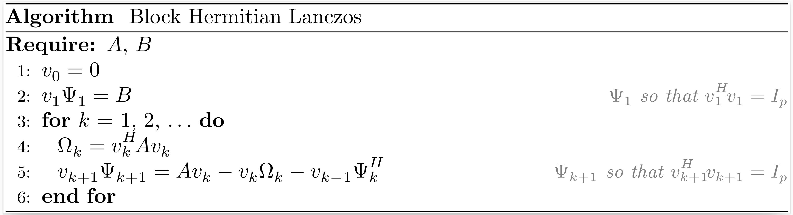
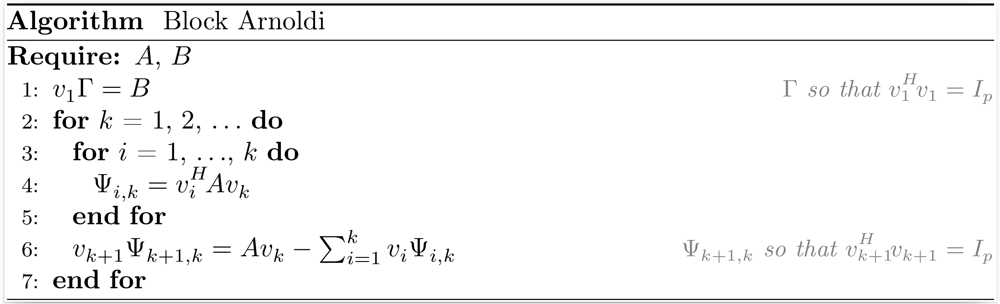
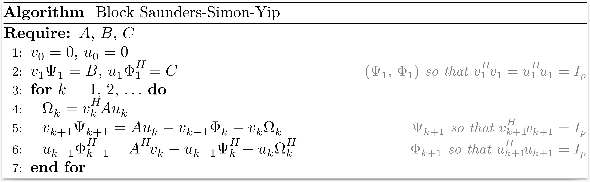

Block Krylov processes
Block Hermitian Lanczos
If the vector $b$ in the Hermitian Lanczos process is replaced by a matrix $B$ with $p$ columns, we can derive the block Hermitian Lanczos process.

After $k$ iterations of the block Hermitian Lanczos process, the situation may be summarized as
\[\begin{align*} A V_k &= V_{k+1} T_{k+1,k}, \\ V_k^H V_k &= I_{pk}, \end{align*}\]
where $V_k$ is an orthonormal basis of the block Krylov subspace $\mathcal{K}_k^{\square}(A,B)$,
\[T_{k+1,k} = \begin{bmatrix} \Omega_1 & \Psi_2^H & & \\ \Psi_2 & \Omega_2 & \ddots & \\ & \ddots & \ddots & \Psi_k^H \\ & & \Psi_k & \Omega_k \\ & & & \Psi_{k+1} \end{bmatrix}.\]
The function hermitian_lanczos returns $V_{k+1}$, $\Psi_1$ and $T_{k+1,k}$.
Related method: BLOCK-MINRES.
Krylov.hermitian_lanczos — MethodV, Ψ, T = hermitian_lanczos(A, B, k; algo="householder")Input arguments
A: a linear operator that models a Hermitian matrix of dimensionn;B: a matrix of sizen × p;k: the number of iterations of the block Hermitian Lanczos process.
Keyword arguments
algo: the algorithm to perform reduced QR factorizations ("gs","mgs","givens"or"householder").
Output arguments
V: a densen × p(k+1)matrix;Ψ: a densep × pupper triangular matrix such thatV₁Ψ = B;T: a sparsep(k+1) × pkblock tridiagonal matrix with a bandwidthp.
Block Non-Hermitian Lanczos
If the vectors $b$ and $c$ in the non-Hermitian Lanczos process are replaced by matrices $B$ and $C$ with both $p$ columns, we can derive the block non-Hermitian Lanczos process.

After $k$ iterations of the block non-Hermitian Lanczos process, the situation may be summarized as
\[\begin{align*} A V_k &= V_{k+1} T_{k+1,k}, \\ A^H U_k &= U_{k+1} T_{k,k+1}^H, \\ V_k^H U_k &= U_k^H V_k = I_{pk}, \end{align*}\]
where $V_k$ and $U_k$ are bases of the block Krylov subspaces $\mathcal{K}^{\square}_k(A,B)$ and $\mathcal{K}^{\square}_k (A^H,C)$, respectively,
\[T_{k+1,k} = \begin{bmatrix} \Omega_1 & \Phi_2 & & \\ \Psi_2 & \Omega_2 & \ddots & \\ & \ddots & \ddots & \Phi_k \\ & & \Psi_k & \Omega_k \\ & & & \Psi_{k+1} \end{bmatrix} , \qquad T_{k,k+1}^H = \begin{bmatrix} \Omega_1^H & \Psi_2^H & & \\ \Phi_2^H & \Omega_2^H & \ddots & \\ & \ddots & \ddots & \Psi_k^H \\ & & \Phi_k^H & \Omega_k^H \\ & & & \Phi_{k+1}^H \end{bmatrix}.\]
The function nonhermitian_lanczos returns $V_{k+1}$, $\Psi_1$, $T_{k+1,k}$, $U_{k+1}$ $\Phi_1^H$ and $T_{k,k+1}^H$.
Krylov.nonhermitian_lanczos — MethodV, Ψ, T, U, Φᴴ, Tᴴ = nonhermitian_lanczos(A, B, C, k)Input arguments
A: a linear operator that models a square matrix of dimensionn;B: a matrix of sizen × p;C: a matrix of sizen × p;k: the number of iterations of the block non-Hermitian Lanczos process.
Output arguments
V: a densen × p(k+1)matrix;Ψ: a densep × pupper triangular matrix such thatV₁Ψ = B;T: a sparsep(k+1) × pkblock tridiagonal matrix with a bandwidthp;U: a densen × p(k+1)matrix;Φᴴ: a densep × pupper triangular matrix such thatU₁Φᴴ = C;Tᴴ: a sparsep(k+1) × pkblock tridiagonal matrix with a bandwidthp.
Block Arnoldi
If the vector $b$ in the Arnoldi process is replaced by a matrix $B$ with $p$ columns, we can derive the block Arnoldi process.

After $k$ iterations of the block Arnoldi process, the situation may be summarized as
\[\begin{align*} A V_k &= V_{k+1} H_{k+1,k}, \\ V_k^H V_k &= I_{pk}, \end{align*}\]
where $V_k$ is an orthonormal basis of the block Krylov subspace $\mathcal{K}_k^{\square}(A,B)$,
\[H_{k+1,k} = \begin{bmatrix} \Psi_{1,1}~ & \Psi_{1,2}~ & \ldots & \Psi_{1,k} \\ \Psi_{2,1}~ & \ddots~ & \ddots & \vdots \\ & \ddots~ & \ddots & \Psi_{k-1,k} \\ & & \Psi_{k,k-1} & \Psi_{k,k} \\ & & & \Psi_{k+1,k} \end{bmatrix}.\]
The function arnoldi returns $V_{k+1}$, $\Gamma$, and $H_{k+1,k}$.
Related method: BLOCK-GMRES.
Krylov.arnoldi — MethodV, Γ, H = arnoldi(A, B, k; algo="householder", reorthogonalization=false)Input arguments
A: a linear operator that models a square matrix of dimensionn;B: a matrix of sizen × p;k: the number of iterations of the block Arnoldi process.
Keyword arguments
algo: the algorithm to perform reduced QR factorizations ("gs","mgs","givens"or"householder").reorthogonalization: reorthogonalize each newly added matrix of the block Krylov basis against all previous matrices (full reorthogonalization).
Output arguments
V: a densen × p(k+1)matrix;Γ: a densep × pupper triangular matrix such thatV₁Γ = B;H: a densep(k+1) × pkblock upper Hessenberg matrix with a lower bandwidthp.
Block Golub-Kahan
If the vector $b$ in the Golub-Kahan process is replaced by a matrix $B$ with $p$ columns, we can derive the block Golub-Kahan process.

After $k$ iterations of the block Golub-Kahan process, the situation may be summarized as
\[\begin{align*} A V_k &= U_{k+1} B_k, \\ A^H U_{k+1} &= V_{k+1} L_{k+1}^H, \\ V_k^H V_k &= U_k^H U_k = I_{pk}, \end{align*}\]
where $V_k$ and $U_k$ are bases of the block Krylov subspaces $\mathcal{K}_k^{\square}(A^HA,A^HB)$ and $\mathcal{K}_k^{\square}(AA^H,B)$, respectively,
\[B_k = \begin{bmatrix} \Omega_1 & & & \\ \Psi_2 & \Omega_2 & & \\ & \ddots & \ddots & \\ & & \Psi_k & \Omega_k \\ & & & \Psi_{k+1} \\ \end{bmatrix} , \qquad L_{k+1}^H = \begin{bmatrix} \Omega_1^H & \Psi_2^H & & & \\ & \Omega_2^H & \ddots & & \\ & & \ddots & \Psi_k^H & \\ & & & \Omega_k^H & \Psi_{k+1}^H \\ & & & & \Omega_{k+1}^H \\ \end{bmatrix}.\]
The function golub_kahan returns $V_{k+1}$, $U_{k+1}$, $\Psi_1$ and $L_{k+1}$.
Krylov.golub_kahan — MethodV, U, Ψ, L = golub_kahan(A, B, k; algo="householder")Input arguments
A: a linear operator that models a matrix of dimensionm × n;B: a matrix of sizem × p;k: the number of iterations of the block Golub-Kahan process.
Keyword argument
algo: the algorithm to perform reduced QR factorizations ("gs","mgs","givens"or"householder").
Output arguments
V: a densen × p(k+1)matrix;U: a densem × p(k+1)matrix;Ψ: a densep × pupper triangular matrix such thatU₁Ψ = B;L: a sparsep(k+1) × p(k+1)block lower bidiagonal matrix with a lower bandwidthp.
Block Saunders-Simon-Yip
If the vectors $b$ and $c$ in the Saunders-Simon-Yip process are replaced by matrices $B$ and $C$ with both $p$ columns, we can derive the block Saunders-Simon-Yip process.

After $k$ iterations of the block Saunders-Simon-Yip process, the situation may be summarized as
\[\begin{align*} A U_k &= V_{k+1} T_{k+1,k}, \\ A^H V_k &= U_{k+1} T_{k,k+1}^H, \\ V_k^H V_k &= U_k^H U_k = I_{pk}, \end{align*}\]
where $\begin{bmatrix} V_k & 0 \\ 0 & U_k \end{bmatrix}$ is an orthonormal basis of the block Krylov subspace $\mathcal{K}^{\square}_k \left(\begin{bmatrix} 0 & A \\ A^H & 0 \end{bmatrix}, \begin{bmatrix} B & 0 \\ 0 & C \end{bmatrix}\right)$,
\[T_{k+1,k} = \begin{bmatrix} \Omega_1 & \Phi_2 & & \\ \Psi_2 & \Omega_2 & \ddots & \\ & \ddots & \ddots & \Phi_k \\ & & \Psi_k & \Omega_k \\ & & & \Psi_{k+1} \end{bmatrix} , \qquad T_{k,k+1}^H = \begin{bmatrix} \Omega_1^H & \Psi_2^H & & \\ \Phi_2^H & \Omega_2^H & \ddots & \\ & \ddots & \ddots & \Psi_k^H \\ & & \Phi_k^H & \Omega_k^H \\ & & & \Phi_{k+1}^H \end{bmatrix}.\]
The function saunders_simon_yip returns $V_{k+1}$, $\Psi_1$, $T_{k+1,k}$, $U_{k+1}$, $\Phi_1^H$ and $T_{k,k+1}^H$.
Krylov.saunders_simon_yip — MethodV, Ψ, T, U, Φᴴ, Tᴴ = saunders_simon_yip(A, B, C, k; algo="householder")Input arguments
A: a linear operator that models a matrix of dimensionm × n;B: a matrix of sizem × p;C: a matrix of sizen × p;k: the number of iterations of the block Saunders-Simon-Yip process.
Keyword argument
algo: the algorithm to perform reduced QR factorizations ("gs","mgs","givens"or"householder").
Output arguments
V: a densem × p(k+1)matrix;Ψ: a densep × pupper triangular matrix such thatV₁Ψ = B;T: a sparsep(k+1) × pkblock tridiagonal matrix with a bandwidthp;U: a densen × p(k+1)matrix;Φᴴ: a densep × pupper triangular matrix such thatU₁Φᴴ = C;Tᴴ: a sparsep(k+1) × pkblock tridiagonal matrix with a bandwidthp.
Block Montoison-Orban
If the vectors $b$ and $c$ in the Montoison-Orban process are replaced by matrices $D$ and $C$ with both $p$ columns, we can derive the block Montoison-Orban process.
After $k$ iterations of the block Montoison-Orban process, the situation may be summarized as
\[\begin{align*} A U_k &= V_{k+1} H_{k+1,k}, \\ B V_k &= U_{k+1} F_{k+1,k}, \\ V_k^H V_k &= U_k^H U_k = I_{pk}, \end{align*}\]
where $\begin{bmatrix} V_k & 0 \\ 0 & U_k \end{bmatrix}$ is an orthonormal basis of the block Krylov subspace $\mathcal{K}^{\square}_k \left(\begin{bmatrix} 0 & A \\ B & 0 \end{bmatrix}, \begin{bmatrix} D & 0 \\ 0 & C \end{bmatrix}\right)$,
\[H_{k+1,k} = \begin{bmatrix} \Psi_{1,1}~ & \Psi_{1,2}~ & \ldots & \Psi_{1,k} \\ \Psi_{2,1}~ & \ddots~ & \ddots & \vdots \\ & \ddots~ & \ddots & \Psi_{k-1,k} \\ & & \Psi_{k,k-1} & \Psi_{k,k} \\ & & & \Psi_{k+1,k} \end{bmatrix} , \qquad F_{k+1,k} = \begin{bmatrix} \Phi_{1,1}~ & \Phi_{1,2}~ & \ldots & \Phi_{1,k} \\ \Phi_{2,1}~ & \ddots~ & \ddots & \vdots \\ & \ddots~ & \ddots & \Phi_{k-1,k} \\ & & \Phi_{k,k-1} & \Phi_{k,k} \\ & & & \Phi_{k+1,k} \end{bmatrix}.\]
The function montoison_orban returns $V_{k+1}$, $\Gamma$, $H_{k+1,k}$, $U_{k+1}$, $\Lambda$, and $F_{k+1,k}$.
Krylov.montoison_orban — MethodV, Γ, H, U, Λ, F = montoison_orban(A, B, D, C, k; algo="householder", reorthogonalization=false)Input arguments
A: a linear operator that models a matrix of dimensionm × n;B: a linear operator that models a matrix of dimensionn × m;D: a matrix of sizem × p;C: a matrix of sizen × p;k: the number of iterations of the block Montoison-Orban process.
Keyword arguments
algo: the algorithm to perform reduced QR factorizations ("gs","mgs","givens"or"householder").reorthogonalization: reorthogonalize each newly added matrix of the block Krylov basis against all previous matrices (full reorthogonalization).
Output arguments
V: a densem × p(k+1)matrix;Γ: a densep × pupper triangular matrix such thatV₁Γ = D;H: a densep(k+1) × pkblock upper Hessenberg matrix with a lower bandwidthp;U: a densen × p(k+1)matrix;Λ: a densep × pupper triangular matrix such thatU₁Λ = C;F: a densep(k+1) × pkblock upper Hessenberg matrix with a lower bandwidthp.